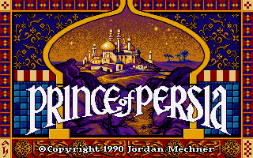
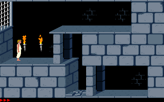

名稱：波斯王子1 (Prince of Persia，英文版)
簡介：Broderbund 1989年出品的動作遊戲，1990移植至DOS，台灣由智冠和終結者資訊代理
進口 [待補]。


備註：本版為1.3版
保護：手冊密碼，破解碼：
PRINCE.EXE
02 00 00 00 03 00 03 00
00 -- -- -- -- -- -- --
或
7E 06 A1 B8 (1.0版)
EB -- -- --
75 0E 83 3E
EB -- -- --
75 0C A1 9E
EB -- -- --
或
EB 2D 8B 36 16 3D D1 E6 FF B4 DA 00 FF B4 2A 01 (1.0版)
-- -- 89 EC 5D 58 05 04 00 50 B8 10 00 CA 02 00
或
3E 9A 00 00 75 05 C7 46 (1.0版)
-- -- -- -- EB -- -- --
89 46 06 A1 9E 00 39 46 06
8C 1E 0A 00 FF 1E 08 00 90
備註：一二代合輯光碟版（CD Collection）內容同1.3磁片版
檔案：prince10.rar = 1.0磁片版（智冠版）
4dprin.rar = 網友以1.0版為基礎修改的重製版（關卡內容不同）